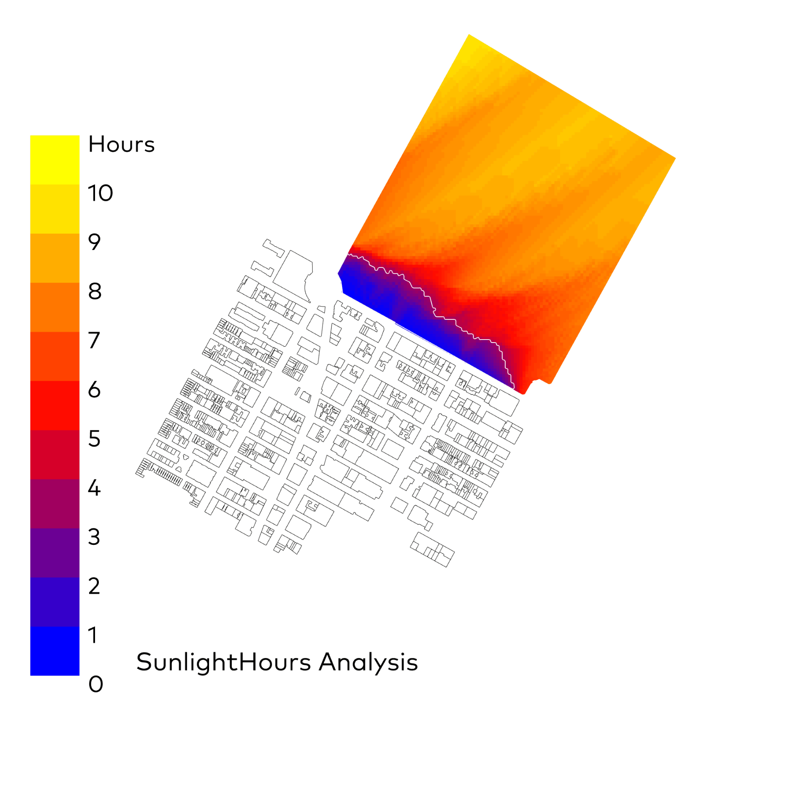
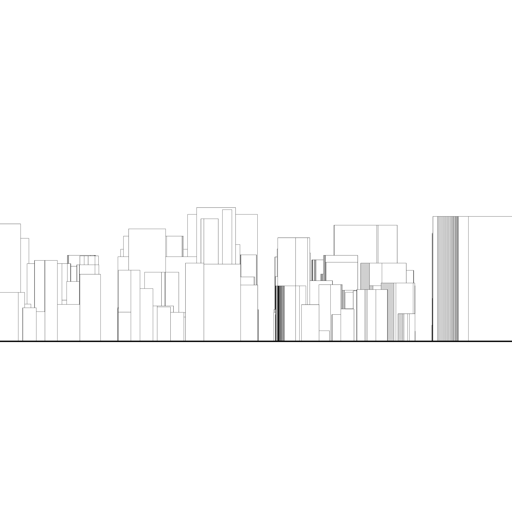
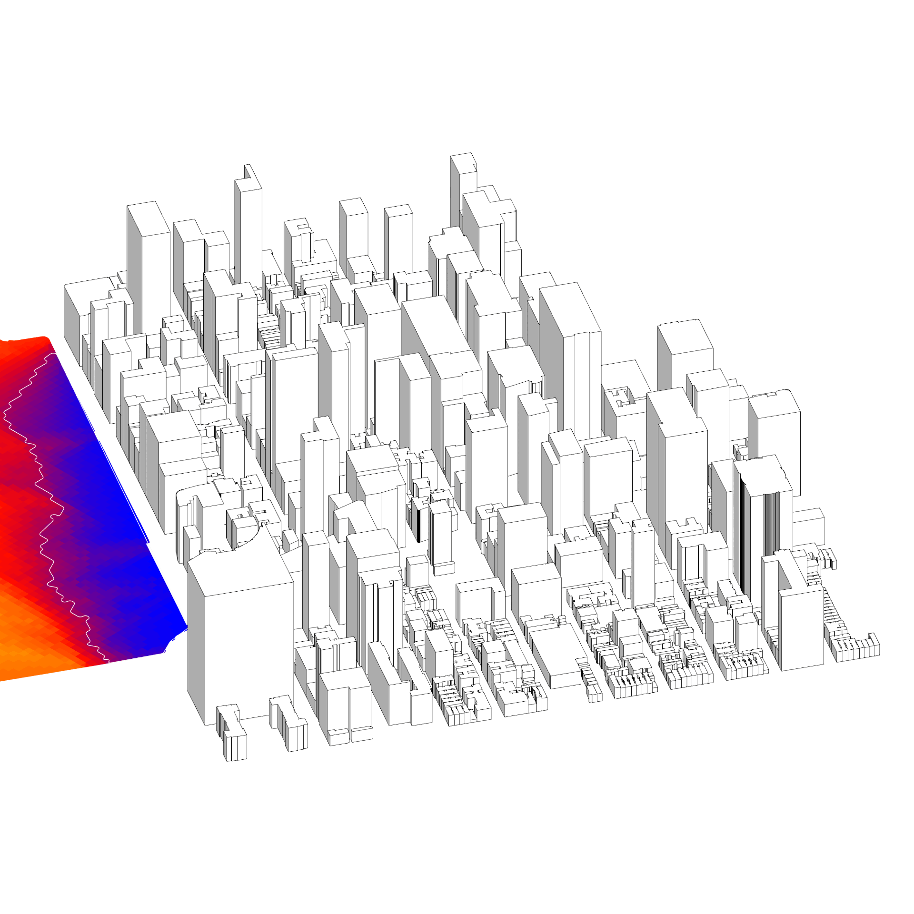

Central Park
Ladybug
⬤ Ladybug optimiert städtebauliche Außenräume durch Sicherung minimaler Tageslichtverfügbarkeit – mindestens 2 Stunden Wintersonne (21. Dezember) auf Grünflächen. Iterative Geometrieanpassung: Höhenreduktion und Repositionierung maximiert winterliche Solarstrahlung bei Dichte- und Typologie-Balance. Multikriterielle Optimierung erfüllt Solarkataster-Vorgaben und städtebauliche Verträge. Transparente Prozesse steigern urbane Lebensqualität durch sonnendurchflutete Plätze.
⬤ Ladybug optimizes urban outdoor spaces by ensuring minimum daylight availability – at least 2 hours of winter sun (December 21) on green spaces. Iterative geometry adjustment: height reduction and repositioning maximizes winter solar radiation while balancing density and typology. Multi-criteria optimization meets solar cadastre requirements and urban development contracts. Transparent processes enhance urban quality of life through sun-drenched spaces.